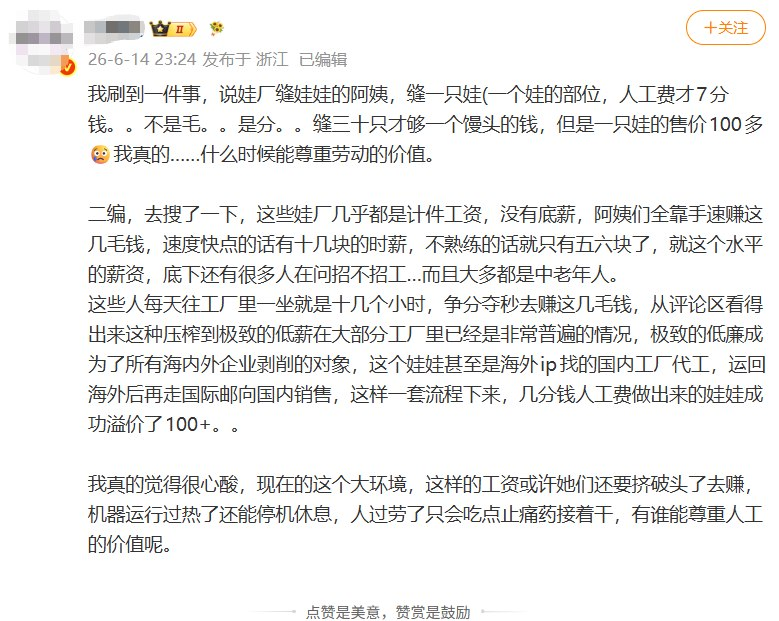
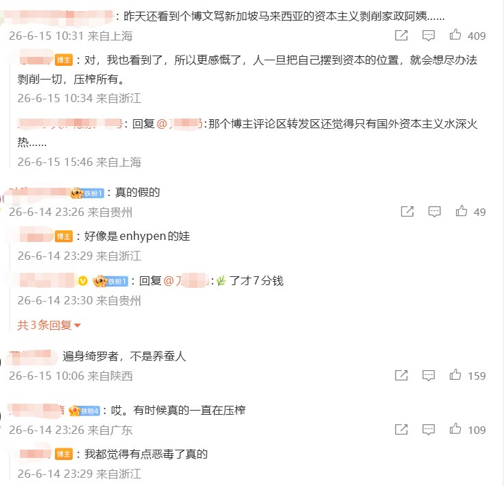
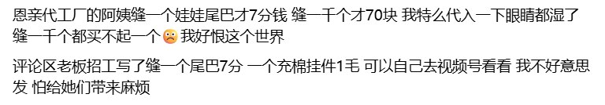

1713✝️❤️🔥
@sss_1713
@whyyoutouzhele 答题纸上轻飘飘的“廉价劳动力”背后是沉重的枷锁。



李老师不是你老师
@whyyoutouzhele
“卖给粉丝的玩偶售价三位数，缝制一道工序的玩偶的工人却只能拿到七分钱”
近日，缝制玩偶暴利引起网友热议。
一位在玩偶工厂上班的阿姨发的玩偶加工视频，她在评论区透露，自己负责的一道工序做完一个玩偶仅能赚7分钱。
工厂普遍都是 8+4 现 12 https://t.co/Lk7kw2WtLs https://t.co/pQd44pchX2